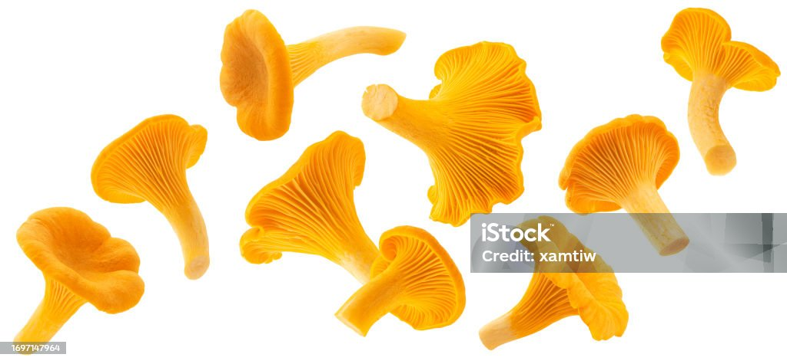

Veggie Spaghetti Squash
About the Recipe
Facts about spaghetti squash
- Contain 1/2 the calories of spaghetti and 1/4 of the carbohydrates
- Contain immunity boosting properties due to being a rich source of vitamin C
- Contain more vitamin C than an orange
- Rich in manganese which supports bone structure, increases bone metabolism and helps prevent osteoporosis.
- Rich in antioxidants which help decrease inflammation connected to cancer prevention and treatment
- Easy way to increase vegetable intake
Ingredients
- 1 spaghetti squash
- olive oil
- 1 pack mushrooms
- 1 yellow onion
- 15 oz crushed tomato (unsalted)
- 3 oz tomato paste
- 8 oz tomato sauce
- 2 tablespoons of minced garlic
- garlic powder (optional)
- red pepper flakes (optional)
- 2 teaspoons of oregano
- fresh basil

Bowl of Spaghetti

Olive Oil

Mashroom

Onion

tomatoes

Garlic

Red Chili
>
Oregano
>
Basil
Preparation
Spaghetti Squash
- Cut in half, remove pulp.
- Drizzle olive oil, pepper and salt.
- Put spaghetti squash in over for 25 minutes at 450.
Sauce
- Add olive oil to saucepan on medium high heat.
- Saute mushrooms, season with salt and pepper.
- Roll up and chop basil. Next add onions, garlic powder, minced garlic, basil, crushed tomatoes, tomato paste to pan.
- Reduce heat to medium-low while preparing squash.
- Take the squash out of the oven and let cool. Fork out spaghetti inside and serve with sauce on top.